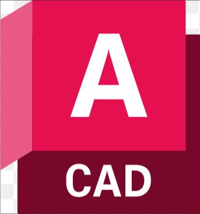
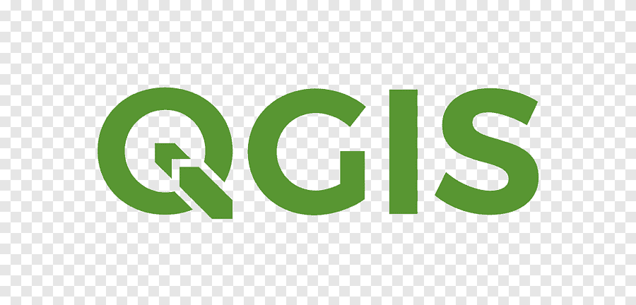

Sobre mi
La mayor experiencia la he acumulado como consultor del área ambiental y como Ingeniero a cargo de proyectos de manufactura enfocados a la solución de la contaminación de aire en industrias de diferentes giros. Sin embargo, debido a las tendencias actuales y al gusto que encontre en la programación, estoy interesado en poder transicionar al sector tecnologico. Lo que busco en general es poder dedicarme a cosas de mi interes, dandole mayor valor al tiempo de mi vida y por que no ? . Poder trabajar desde donde me encuentre haciendo de mi computadora mi herramienta de trabajo.
Aptitudes
Estas son algunas de las tecnologías de las que tengo conocimientos.


Cursos realizados
- Curso de Fundamentos de la Programación Nivel Universidad
- Curso de Programación con C# Nivel 1 [Desde Cero] 👉 Ver certificado
- Curso de Programación con C# Nivel 2: POO + .NET + SQL 👉 Ver certificado